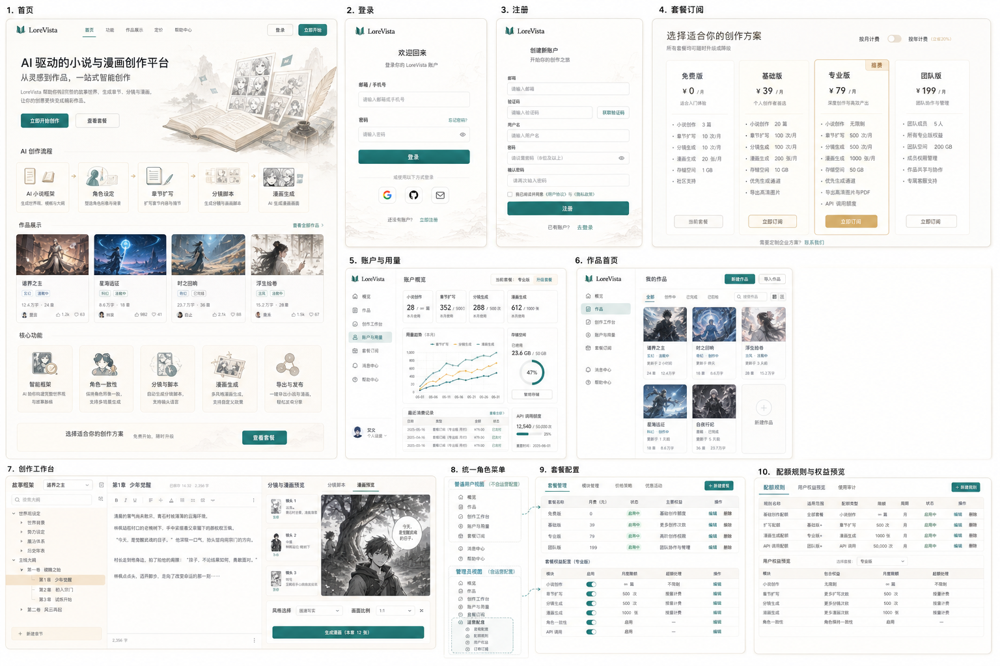

<template id="scene2-workflow-template">
  <div data-composition-id="scene2-workflow" data-width="1920" data-height="1080">
    <div class="scene-shell">
      <div class="section-copy">
        <div class="eyebrow">核心创作链路</div>
        <h2 class="headline">从小说框架到漫画成图，能力不是分散堆叠，而是按创作顺序连接起来。</h2>
        <p class="summary">
          代码和界面都显示出一个很清晰的产品判断：真正的创作者需要的是“连续上下文”，而不是在多个工具之间来回切换。
        </p>
        <div class="workflow-list">
          <div class="workflow-item active">
            <div class="step-no">01</div>
            <div class="step-copy">
              <div class="step-title">故事框架生成</div>
              <div class="step-desc">题材、世界观、角色、三幕式大纲</div>
            </div>
          </div>
          <div class="workflow-item">
            <div class="step-no">02</div>
            <div class="step-copy">
              <div class="step-title">角色设定与参考图</div>
              <div class="step-desc">全局人设、默认垫图、角色一致性</div>
            </div>
          </div>
          <div class="workflow-item">
            <div class="step-no">03</div>
            <div class="step-copy">
              <div class="step-title">章节扩写与润色</div>
              <div class="step-desc">正文生成、片段改写、质量评估</div>
            </div>
          </div>
          <div class="workflow-item">
            <div class="step-no">04</div>
            <div class="step-copy">
              <div class="step-title">分镜脚本与漫画生成</div>
              <div class="step-desc">自动拆镜、逐张出图、单图重绘</div>
            </div>
          </div>
        </div>
      </div>

      <div class="visual-wrap">
        <div class="screen-card">
          
          <div class="highlight highlight-a"></div>
          <div class="highlight highlight-b"></div>
          <div class="highlight highlight-c"></div>
          <div class="callout callout-a">
            <div class="callout-title">创作首页</div>
            <div class="callout-body">落地页、登录、注册、订阅入口一体化</div>
          </div>
          <div class="callout callout-b">
            <div class="callout-title">工作台</div>
            <div class="callout-body">章节、正文、分镜、漫画预览同屏协作</div>
          </div>
          <div class="callout callout-c">
            <div class="callout-title">后台配置</div>
            <div class="callout-body">套餐、配额、用户权限与版本管理</div>
          </div>
        </div>
      </div>
    </div>

    <style>
      [data-composition-id="scene2-workflow"] {
        width: 1920px;
        height: 1080px;
        overflow: hidden;
      }

      [data-composition-id="scene2-workflow"] .scene-shell {
        width: 100%;
        height: 100%;
        padding: 84px 88px;
        box-sizing: border-box;
        display: grid;
        grid-template-columns: 560px minmax(0, 1fr);
        gap: 46px;
        align-items: center;
      }

      [data-composition-id="scene2-workflow"] .section-copy {
        display: flex;
        flex-direction: column;
        gap: 20px;
      }

      [data-composition-id="scene2-workflow"] .eyebrow {
        width: fit-content;
        padding: 10px 16px;
        border-radius: 999px;
        background: rgba(255, 255, 255, 0.7);
        color: #0f3f3f;
        font-size: 14px;
        font-weight: 700;
        letter-spacing: 0.08em;
      }

      [data-composition-id="scene2-workflow"] .headline {
        font-family: "Noto Serif SC", serif;
        font-size: 46px;
        line-height: 1.34;
        letter-spacing: -0.03em;
        color: #173333;
      }

      [data-composition-id="scene2-workflow"] .summary {
        font-size: 20px;
        line-height: 1.9;
        color: rgba(31, 41, 55, 0.74);
      }

      [data-composition-id="scene2-workflow"] .workflow-list {
        display: flex;
        flex-direction: column;
        gap: 14px;
        margin-top: 12px;
      }

      [data-composition-id="scene2-workflow"] .workflow-item {
        display: flex;
        gap: 16px;
        padding: 18px 18px 18px 16px;
        border-radius: 24px;
        background: rgba(255, 255, 255, 0.74);
        border: 1px solid rgba(15, 63, 63, 0.08);
        box-shadow: 0 20px 40px rgba(15, 63, 63, 0.08);
      }

      [data-composition-id="scene2-workflow"] .workflow-item.active {
        border-color: rgba(23, 166, 162, 0.28);
      }

      [data-composition-id="scene2-workflow"] .step-no {
        width: 48px;
        height: 48px;
        border-radius: 16px;
        background: rgba(15, 63, 63, 0.92);
        color: #eef2e8;
        display: flex;
        align-items: center;
        justify-content: center;
        font-size: 16px;
        font-weight: 700;
      }

      [data-composition-id="scene2-workflow"] .step-title {
        font-size: 22px;
        font-weight: 700;
        color: #173333;
      }

      [data-composition-id="scene2-workflow"] .step-desc {
        margin-top: 4px;
        font-size: 16px;
        color: rgba(31, 41, 55, 0.7);
      }

      [data-composition-id="scene2-workflow"] .visual-wrap {
        position: relative;
        height: 100%;
        display: flex;
        align-items: center;
        justify-content: center;
      }

      [data-composition-id="scene2-workflow"] .screen-card {
        position: relative;
        width: 1120px;
        height: 748px;
        border-radius: 34px;
        background: rgba(255, 255, 255, 0.72);
        border: 1px solid rgba(15, 63, 63, 0.1);
        box-shadow: 0 40px 90px rgba(15, 63, 63, 0.14);
        overflow: hidden;
      }

      [data-composition-id="scene2-workflow"] .ui-image {
        position: absolute;
        left: 28px;
        top: 28px;
        width: 1064px;
        height: auto;
        border-radius: 24px;
        box-shadow: 0 22px 48px rgba(15, 63, 63, 0.16);
      }

      [data-composition-id="scene2-workflow"] .highlight {
        position: absolute;
        border: 3px solid rgba(23, 166, 162, 0.96);
        border-radius: 22px;
        box-shadow: 0 0 0 8px rgba(23, 166, 162, 0.12);
        opacity: 0;
      }

      [data-composition-id="scene2-workflow"] .highlight-a {
        left: 34px;
        top: 32px;
        width: 306px;
        height: 212px;
      }

      [data-composition-id="scene2-workflow"] .highlight-b {
        left: 32px;
        top: 500px;
        width: 630px;
        height: 202px;
      }

      [data-composition-id="scene2-workflow"] .highlight-c {
        right: 34px;
        bottom: 20px;
        width: 290px;
        height: 168px;
      }

      [data-composition-id="scene2-workflow"] .callout {
        position: absolute;
        width: 260px;
        padding: 18px 18px 16px;
        border-radius: 24px;
        background: rgba(15, 63, 63, 0.92);
        color: #eef2e8;
        box-shadow: 0 20px 36px rgba(15, 63, 63, 0.24);
        opacity: 0;
      }

      [data-composition-id="scene2-workflow"] .callout-title {
        font-size: 20px;
        font-weight: 700;
        margin-bottom: 8px;
      }

      [data-composition-id="scene2-workflow"] .callout-body {
        font-size: 15px;
        line-height: 1.65;
        color: rgba(238, 242, 232, 0.82);
      }

      [data-composition-id="scene2-workflow"] .callout-a {
        right: 40px;
        top: 48px;
      }

      [data-composition-id="scene2-workflow"] .callout-b {
        right: 18px;
        top: 318px;
      }

      [data-composition-id="scene2-workflow"] .callout-c {
        left: 44px;
        bottom: 24px;
      }
    </style>

    <script src="https://cdn.jsdelivr.net/npm/gsap@3.14.2/dist/gsap.min.js"></script>
    <script>
      (function () {
        const tl = gsap.timeline({ paused: true });
        const root = '[data-composition-id="scene2-workflow"]';

        tl.from(`${root} .section-copy > *`, {
          y: 24,
          opacity: 0,
          duration: 0.68,
          stagger: 0.12,
          ease: "power2.out",
        });
        tl.from(
          `${root} .screen-card`,
          { y: 38, scale: 0.96, opacity: 0, duration: 0.92, ease: "power3.out" },
          0.2,
        );
        tl.from(
          `${root} .ui-image`,
          { scale: 1.08, duration: 2.1, ease: "power2.out" },
          0.4,
        );
        tl.to(`${root} .highlight-a`, { opacity: 1, duration: 0.45, ease: "power2.out" }, 1.2);
        tl.to(`${root} .callout-a`, { opacity: 1, x: 0, y: 0, duration: 0.5, ease: "back.out(1.3)" }, 1.35);
        tl.to(`${root} .highlight-a`, { opacity: 0, duration: 0.3 }, 2.5);
        tl.to(`${root} .callout-a`, { opacity: 0, y: -12, duration: 0.28 }, 2.55);

        tl.to(`${root} .highlight-b`, { opacity: 1, duration: 0.45, ease: "power2.out" }, 2.9);
        tl.to(`${root} .callout-b`, { opacity: 1, duration: 0.5, ease: "back.out(1.3)" }, 3.05);
        tl.to(`${root} .ui-image`, { x: -34, y: -18, scale: 1.03, duration: 1.6, ease: "power1.inOut" }, 3.0);
        tl.to(`${root} .highlight-b`, { opacity: 0, duration: 0.3 }, 4.7);
        tl.to(`${root} .callout-b`, { opacity: 0, y: -10, duration: 0.28 }, 4.75);

        tl.to(`${root} .highlight-c`, { opacity: 1, duration: 0.45, ease: "power2.out" }, 5.05);
        tl.to(`${root} .callout-c`, { opacity: 1, duration: 0.5, ease: "back.out(1.3)" }, 5.18);
        tl.to(`${root} .ui-image`, { x: -12, y: 0, scale: 1, duration: 1.2, ease: "power1.inOut" }, 5.2);

        window.__timelines = window.__timelines || {};
        window.__timelines["scene2-workflow"] = tl;
      })();
    </script>
  </div>
</template>
